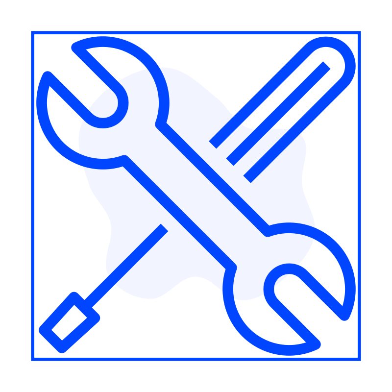
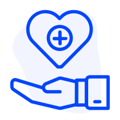

Extracto
Currículum
 Experiencia laboral
Experiencia laboral
Cómputos, presupuestos y órdenes de inversión
Análisis de legajos. Pedido de cotizaciones y elaboración de presupuestos. Estimación de costos de anteproyectos. Manejo de software Presto. Actualización de base de datos de precios.
Predimensionador de presupuestos
Confección de un Predimensionador en software Presto. Consiste en un programa en el cual ingresando algunos parámetros básicos de un edificio de viviendas (superficies, terminaciones, calidades) se genera un presupuesto completo con precios de la base de datos.
Analista de control de gestión
Revisión mensual de los márgenes brutos de las obras activas. Seguimiento de ingresos, egresos, estado de acopios, cajas y cuentas patrimoniales. Evolución histórica y proyección a futuro.
Mejora continua del área
Elaboración de planillas de control de costo, plantillas de informes de Presto, reportes de presupuestos para otras áreas.
 Formación
Formación
Universidad Nacional de Rosario
2014 — 2018Promedio académico: 8,48.
Instituto San Martín
2000 — 2013Educación inicial, primaria y secundaria.
Mejor promedio de la promoción 2013.
Saint Paul Institute
2002 — 2012Capacitación en lengua inglesa.
Mejor promedio de la promoción 2012.
 Habilidades
Resolución de problemas
Flexibilidad
Capacidad de aprendizaje
Razonamiento analítico
Office
Google Workspace
Presto
Staad Pro
Autocad
Revit
Javascript
Google Apps Script
Data Studio
CSS
HTML
AppSheet
Cursos
Sustentabilidad en ingeniería civil
Estructuras sismorresistentes
Puentes
Hidrolgía e hidráulica en territorios urbanizados
BIM Design
Introducción al desarrollo front-end
2017. UNR. Nota: 9.
2018. UNR. Nota: 10.
2018. UNR. Nota: 10.
2018. UNR. Nota: 10.
2020. Edilizia. Certificado ↗
2023. TICMas Academy. Certificado ↗
Idiomas
Inglés
First Certificate in English, University of Cambridge. Grade: B
English for bussiness. Curso dictado por la academia StepUp.
 Voluntariado
Cáritas
Fundación SÍ
Jabes Casa de Restauración
Goya, 2011-2012.
Goya, 2012-2013.
Rosario, 2015-2018.